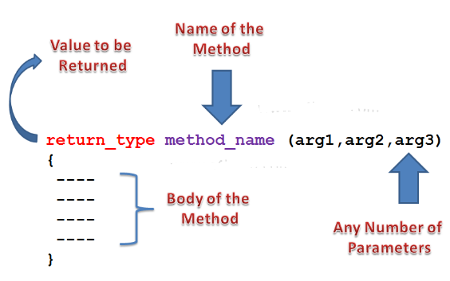

Methods: Describing behaviors
Java methods are where you put the operations on data (variables) in your Java code. In other words, you group Java operations (code) inside Java methods. Java methods must be located inside a Java class. 
Java programmers use methods to describe behaviors. A method declaration has the following syntax:
[static] returnType identifier ( [parameterList] )
{
// method body
}
- A method declaration optionally begins with keyword
static(for a non-entity behavior) and continues with areturnTypethat's followed by a non-reservedidentifierthat names the method. - The name is then followed by a round bracket-delimited
optional
parameterList. A brace-delimited body containing code to execute when the method is called follows. - The
returnTypeidentifies the type of values that are returned from the method via the return statement, which I'll discuss later. For example, if a method returns strings, its return type would be set toString. When a method doesn't return a value, its return type is set tovoid. - The parameter list is a comma-separated list of parameter declarations: each declaration consists of a type followed by a non-reserved identifier that names the parameter. A parameter is a variable that receives an argument (an expression value whose type is compatible with its corresponding parameter) when a method or constructor is called.
- A parameter is local to its method or constructor. It comes into existence when the method or constructor is called and disappears when the method or constructor returns to its caller. In other words, its lifetime is the method execution. A parameter can be accessed by any code within the method. Its scope is the entire method.
Book class:
class Book
{
// ...
String getTitle()
{
return title;
}
int getPubYear()
{
return pubYear;
}
void setTitle(String _title)
{
title = _title;
}
void setPubYear(int _pubYear)
{
pubYear = _pubYear;
}
}